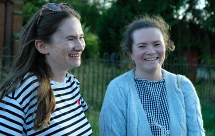
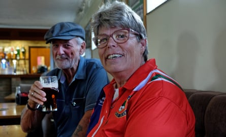

T he genteel west Norfolk village of Marham does not seem to be at the forefront of Britain’s military might. A dance class is about to start in the village hall, a game of crown green bowls is under way and swallows are swooping around the medieval church tower as wood pigeons coo.
“It’s a lovely, quiet little village,” says Nona Bourne as she watches another end of bowls in a match between Marham and nearby Massingham.
Like many, Bourne is troubled by the news that this week thrust Marham to the frontline of UK’s nuclear arsenal, in the biggest expansion of the programme for a generation.
Without consultation, RAF Marham is to be equipped with new F-35A jets capable of carrying warheads with three times the explosive power of the bomb dropped on Hiroshima.
Bourne said: “When they spread it all over the news that these planes are going to come here from America with these bombs, it makes you think we’re going to be targeted. My bungalow is five minutes from the base.”
The Campaign for Nuclear Disarmament is planning a protest in Marham on Saturday. Bourne, whose son-in-law used to work at the base, is tempted to take part. “I might join in,” she says. “My daughter says we’ve always been a target here, but I am concerned. If I was younger I’d think about moving, but I’m 83, I’m not going anywhere.”
Sisters Becky, 29, and Katherine Blakie, 31, are heading to a friend’s house for a plunge in their hot tub. “I read about the weapons on Facebook,” says Becky. “It’s strange to think they’ll be here in little old Marham.”
Becky, who works in fundraising, is annoyed that the village was not consulted about the decision. She says: “Marham and the RAF base are intertwined so we should definitely have had a say.”
Katherine, a medical student, says: “It makes you think, ‘Are we safe, if people know nuclear weapons are here?’”
Becky and Katherine Blakie: ‘Marham and the RAF base are intertwined so we should definitely have had a say.’Photograph: John Robertson/The Guardian
At this stage it is unclear where the nuclear warheads will be housed, but new jets to be based at Marham have the capacity to drop them. Wherever they are stored, the fear Marham will be a target is widespread in the village.
“Look what happened at Pearl Harbor,” says Patricia Gordon after finishing her bowls match. “We’d be obliterated here.”
She adds: “And with Donald Trump’s finger on the button, does it matter that we’ve got nuclear weapons or not?”
But her partner, Bruce Townsend, 77, a retired lorry driver, thinks the nuclear deterrent works. He says: “You can’t give up nuclear weapons. Iran, and those countries, know damn well that if they start anything, they’ll just get wiped out.”
He adds: “I feel the same about the protest as I did about people who tried to ban the bomb. It’s stupid. They can’t change it.”
Bruce Townsend and Patricia Gordon at the bowls club. ‘We’d be obliterated here,’ says Gordon.Photograph: John Robertson/The Guardian
It is the men in Marham who seem more relaxed about the prospect of nuclear-armed planes on their doorstep. Chris Joice, a carer who used to work at the base, says: “We’ve had F-35s for so many years, and having the next model isn’t going to make much difference.”
Joice is out walking a friend’s dog, Millie, who has an RAF roundel pendant strapped to her collar. He is concerned about the lack of consultation: “I’m just annoyed that all these decisions go ahead and the common man doesn’t have a single word in.”
He adds: “No one needs that kind of firepower. I’d rather people rolled dice to settle their beefs.”
Chris Joice: ‘We’ve had F-35s for so many years, and having the next model isn’t going to make much difference.’Photograph: John Robertson/The Guardian
Others are more full-throated in their support. Jim Smith, 79, a retired construction worker, remembers nuclear weapons at the base in the 1950s. “They had them up there in 1958 or 59 when they had the V bombers. It stopped a world war then. And it’s no different now.”
A man on a bike who would only give his name as John recently retired as a grounds maintenance worker at the base. He says: “They’re never going to attack us. It would be Armageddon if it comes to that. So it doesn’t make a shite’s worth of difference worrying about it.”
He adds: “I don’t mind protest, I’m a biker so I’m all about freedom, but I’ve got better things to do. People protesting here don’t live in the real world, they should worry instead about people sleeping on the streets in King’s Lynn.”
Colin Callaby, 64, is out picking cherries from a tree in the middle of the village. The cherries, which he plans to turn into wine, are the sweetest he has ever known.
“We’re right in the firing line,” he says, “but if there’s going to be a nuclear bomb we’re all done for so I’d rather be right underneath it and die instantly than be 50 miles away and take weeks to die from radiation.”
He adds: “It’s very sad that mankind has got to spend billions of pounds on mass destruction and we can’t do something better with that money. But what can you do?”